The Creative Midi Blaster MB-10 recently entered my retro-collection 33 years after its first release in 1993. Seeing that there isn’t much detailed information about this device on the internet, I decided to do a review followed by a teardown of this device. I will also take some sample audio recordings of it.
Background of MIDI devices
In the 1980s and 1990s, during the relatively early days of personal computing, PCs were not very powerful as they did not have much CPU power and memory.
To play sounds especially long musical soundtracks, many PC games opted to utilise FM synthesis such as the Yamaha OPL (Operator Type-L) series of chips on early sound cards like Adlib and Sound Blaster. This FM synthesis generates sound waveforms based on the instructions sent to the sound card. Digital audio is supported by cards like Sound Blaster but usually only used for short effects due to higher memory requirements.
The higher-end alternative to FM Synthesis was Wavetable Synthesis. By sending MIDI commands to a dedicated daughterboard or external sound module, games could play actual recordings/samples of real instruments. This offered vastly superior sound quality, but the higher cost of these arguably optional hardware like the Roland MT-32 or SC-55 meant the average PC gamer seldom purchased them much less heard what they sounded like.
I personally recalled some games having some sound module hardware names in their setup and readme files but having no idea what those were. Now today decades later, I got to experience what I missed then and hear what those games were meant to sound like as their composers intended.
Background of my external MIDI devices
A decade ago, I purchased a second-hand Roland Sound Canvas SC-55mkII and remember being floored by the sound quality.
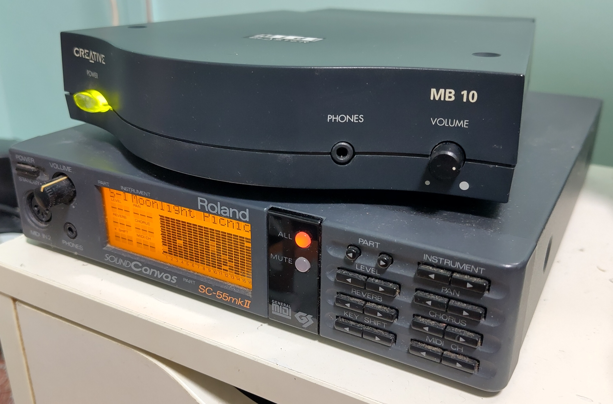The SC-55mkII (bottom) is a slight upgrade from the original 1991 SC-55 which was the first sound module to incorporate the new General MIDI standard. The SC-55 is widely considered to be the de-facto reference sound module for General MIDI for DOS games of the time period as many game music composers composed their music for this device. Famous examples are Descent and Doom.
When the Creative MB-10 was generously donated to me, I was initially surprised that Creative also made such an external module as well. Most people who lived through that time would instead associate Creative with their Sound Blaster line of sound cards which pretty much set the standard for PC audio at that time.
With limited information available online on this module, it seems this is the only external MIDI device released by Creative.
MB-10 External device views
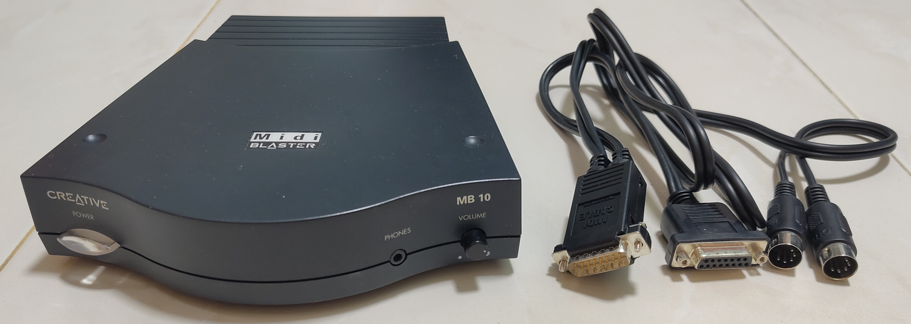On the front of the module, it has a Power/Activity LED, headphone jack and volume dial. The Power/Activity LED will blink when there is MIDI activity.
The module comes with a cable that interfaces with a sound card through the joystick port.
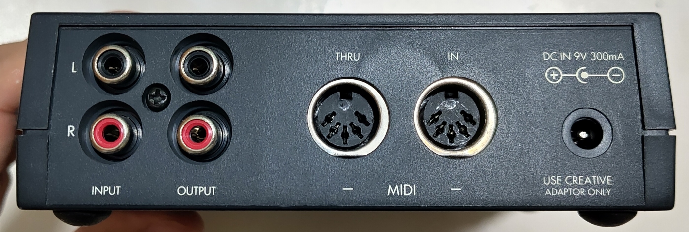On the rear, we can see the RCA line in/out, MIDI In/Thru and the power connector. Note the 9V centre-negative polarity of the DC power connector which is relatively less common.
MIDI In/Thru ports are relatively common for MIDI devices as it enabled daisy-chaining of multiple MIDI devices to share the same input source.
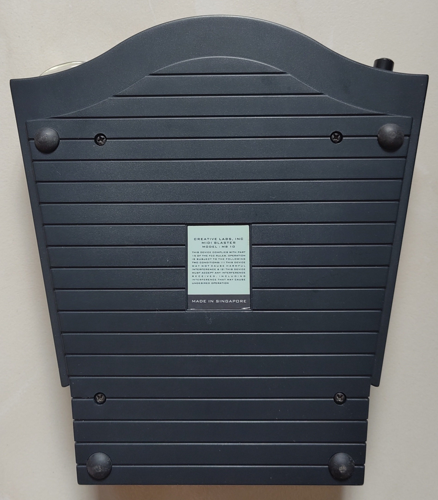On the bottom, the label indicates that the device was Made in Singapore. Those was the days when Singapore was still relatively strong in the consumer device manufacturing space.
External box view
The original packing box was also passed to me together with the module. This would turn out to be highly useful as it gave me valuable information about the specifications of the device absent online sources.
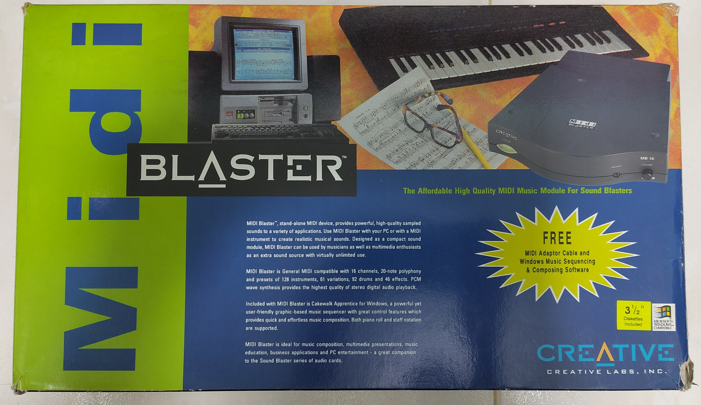Like with most products, the box was supposed to come with floppy disk software and the user manual, but those sadly weren’t included. Those must have been misplaced during the passage of time of decades.
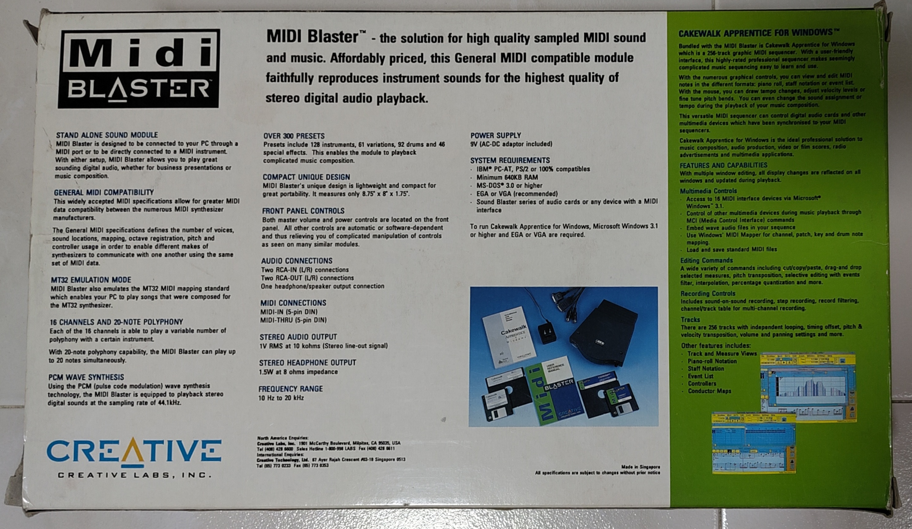Based on the box, it supports the following specifications:
- General Midi Compatible
- 16 Midi Channels
- 20-note polyphony
- 44.1 kHz Sampling Rate
- 128 instruments
- 61 variations
- 92 drums
- 46 special effects
- 10 Hz to 20 kHz frequency range
- MT-32 emulation
Some immediate thoughts came to mind when I read the specifications:
- It is unknown how to get the device into MT-32 emulation mode since the user manual and software is missing.
- 20 notes is below the minimum of 24 required for General MIDI Level 1 standard hence it technically does not comply.
- 44.1 kHz is better than SC-55’s 32 kHz sampling rate.
Videos
Since there is limited information much less audio captures of this device, I decided to capture full-length audio samples from Descent and Doom gameplays, their MIDI tracks, as well as comparisons to my SC-55mkII.
Short comparison with Roland SC-55mkII
Both devices are daisy-chained and their outputs recorded simultaneously. The audio source is from the actual game running on my 486 PC.
Creative MB-10 vs Roland SC-55: Descent game MIDI (03:43) Creative MB-10 vs Roland SC-55: Doom game MIDI (02:46)Full-length game MIDI music
MIDI tracks from Descent and Doom are played on my modern PC through a Roland UM-One USB Midi interface.
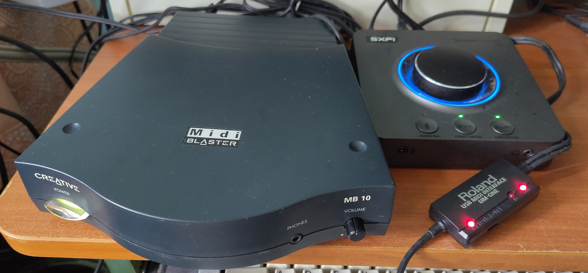Sound is then recorded on my modern SoundBlaster X4 at 24-bit, 48kHz.
Creative MB-10 playing Descent General MIDI (1:24:49) Creative MB-10 playing Doom General MIDI (1:11:47)Review
Now let’s review this device as though we are in the early 1990s. I will start with a specification comparison with the Roland SC-55 series as the reference standard.
| Feature | Creative MB-10 (Box Specs) | Roland SC-55 (Original) | Roland SC-55mkII | Roland SC-55ST |
|---|---|---|---|---|
| Launch Year | 1993 | 1991 | 1993 | 1993 |
| ~Launch Price | US\$300 | US\$795 | US\$795 | US\$400 |
| 2026 Inflated adjusted | US\$675 / SG\$855 | US\$1900 / SG\$2410 | US\$1900 / SG\$2410 | US\$900 / SG\$1140 |
| Sampling Rate | 44.1 kHz | 32 kHz | 32 kHz | 32 kHz |
| Polyphony notes | 20 | 24 | 28 | 28 |
| Instruments | 128 Tones + 61 Variations | 317 | 354 | 354 |
| Drums | 92 drums | 9 kits | 9 kits | 9 kits |
| Display | None. LED indicator. | LCD | LCD | None. LED Indicator. |
It’s difficult to judge an audio device purely from paper specifications. Based on what I hear from the MB-10 and doing the side-by-side comparison, I can confidently say it is very competitive with the SC-55. It is close enough that if one’s attention is focused on playing a game, you are unlikely to instantly pick out the differences between both.
This goes with my anecdotal observation that products from Creative from decades ago to the present generally offer good value-for-money. Providing good features at budget-to-mid-range prices.
If one listens intently, one can definitely pick out the differences.
- The reduced note polyphony compared to the SC-55’s 24-note is clearly noticeable when playing tracks with multiple notes. Certain notes are simply not played at all on the MB-10 whereas the SC-55 sounds richer.
- The MB-10’s higher 44.1kHz sampling rate vs SC-55’s 32kHz sometimes shines through as certain higher pitches can be better heard.
Howeve there are some downsides:
- During hour-long plays of musical tracks, I do notice the MB-10 will occasionally freeze requiring a power cycle to recover. Also during long plays, notes sometimes hang similar to the hanging-notes bug that plagued some models of the SB16 and AWE32 sound cards. These problems are rare and infrequent enough that I cannot reliably replicate them but they do happen from time to time.
- There is noticeable noise floor if one uses the headphone jack on the front. It’s unclear to me if this is a design flaw or due to the age of this device. (I may need to replace the capacitors near the headphone jack.) The rear RCA line-out does not have this issue.
Comparison with the Roland SC-55 series for a 1990s consumer
By specification alone, the MB-10 technically does not provide the full authentic General Midi experience.
If money is no object, just splurge on the Roland SC-55 series to hear the music as the composers intended. Unless one is more than an amateur composer, there is no need to consider the very expensive original SC-55 or SC-55mkII. So the real question is between the SC-55ST or MB-10?
The MB-10’s price is 25% cheaper compared to the SC-55ST for less notes and therefore technical loss of General MIDI compatibility. Is that a worthy trade-off?
US\$100 is a more significant amount in early 1990s than it is today. An argument can be made that if one is gonna spend the extra money to buy an external MIDI sound module, might at well go with the SC-55 as that is the de-facto standard.
In my opinion, it can be for someone where the extra US\$100 saved may be save or used to purchase something else. The provided free Cakewalk Apprentice MIDI sequencer software may also be a deciding factor.
There is probably a market for this and the MB-10 is a worthy consideration.
Teardown
Now let me move on to tearing down the device to see what are the parts that make it tick. For brevity, I will only cover the major ICs.
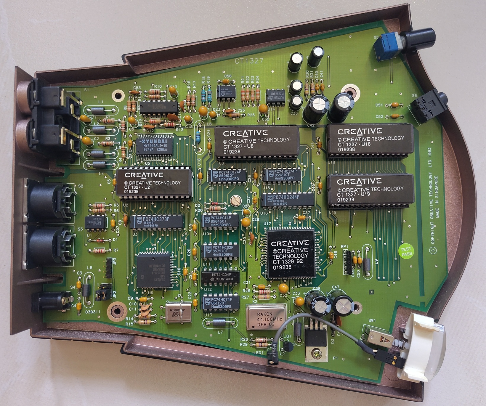All through-hole components which should make repair easier to do if necessary. The chips which are covered by the Creative stickers are definitely of interest.
U6: Siemens 80C32-16-N
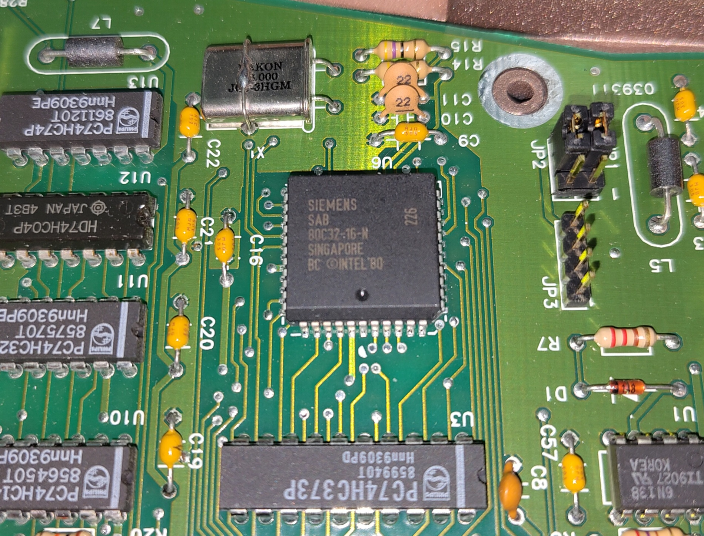This is an 8-bit 16Mhz microcontroller. 80C32 part number indicates it is using an external ROM. It is based on the venerable 8051 architecture.
This part is responsible for receiving the MIDI instructions and commanding the Dream effects processor.
U17: Dream SAM8905
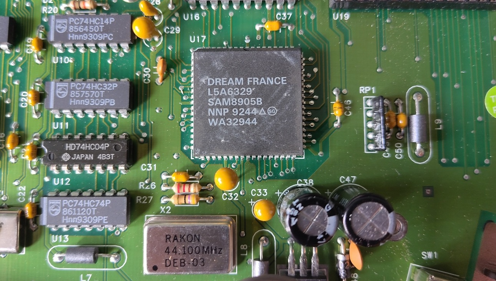Peeling back the sticker of the largest chip reveals a Dream SAM8905 effects processor.
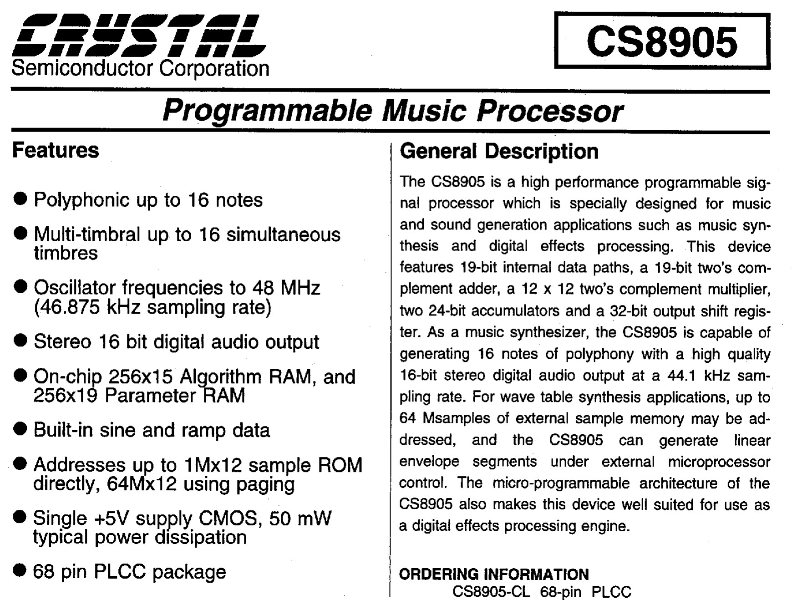The datasheet screenshot is from Crystal as I could not locate one from Dream. According to dosdays.co.uk “Crystal Semiconductor were an authorised chip fabricator for Dream, and were permitted to have their chips branded ‘Crystal’”. So this datasheet should be an acceptable replacement.
The Rakon 44.1Mhz crystal confirms the appropriate clock signal that drives the Dream chip for that sampling rate.
Based on the datasheet it reveals that this chip can only handle up to 16 notes simultaneously. This is not consistent with the advertised 20-note specifications. Unless I’m missing something, the advertised specification is simply not true or I’m interpreting it differently.
This is something that I will test for later!
U2, U8, U18, U19: ROM chips
The other 4 chips covered with the stickers are revealed to be ROM chips made by ST. They are all EPROM (Erasable Programmable Read-Only Memory) with a quartz window to allow erasure via UV light.
For preservation purposes, I dumped them out. Other photos and dumped ROMs have been uploaded to this Github repository.
Here are the headers of the dumped ROMs:
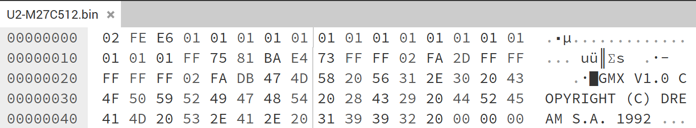The U2 is the 64KiB external ROM holding the firmware used by the Siemens microcontroller. Note the Dream S.A copyright. Creative probably kept a significant chunk of the OEM firmware provided by Dream.
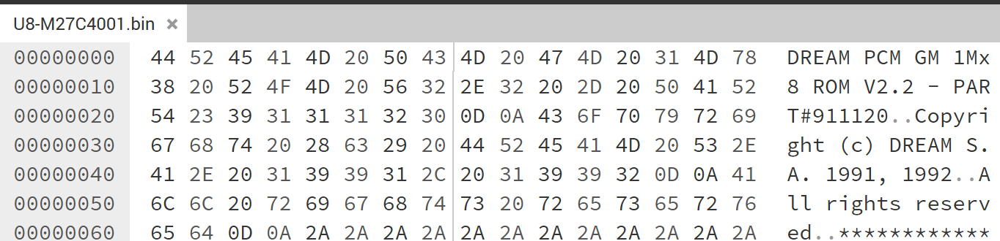The Dream PCM CM at the start of the U8 ROM indicates that it holds the General MIDI (GM) wavetable. 1Mx8 indicates the entire GM table has a size of 1MiB. Given that the chip M27C4001 has size of 512KiB, it means the ROM is split across 2 chips.
The other chip is likely U18 since it has the same size and does not have any copyright data at the beginning indicating that is meant to continue after the U8 ROM.
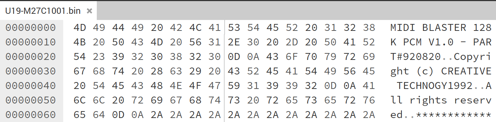U19 has a Creative copyright header. My guess is this contains Creative’s specific enhancements such as but not limited to, extra instruments and MT-32 emulation. I would love to hear what the Creative’s engineers who designed this device have to say.
In summary:
| Designator | Part Number | Capacity (KiB) | Function |
|---|---|---|---|
| U2 | M27C512 | 64 | Dream firmware for Siemens MCU |
| U8 | M27C4001 | 512 | Dream General Midi Bank 1 |
| U18 | M27C4001 | 512 | Dream General Midi Bank 2 |
| U19 | M27C1001 | 128 | Creative Custom Bank |
Analog backend stage
3 chips are relevant in this stage:
- U4: TL074CN Op Amp
- U7: TDA1545 Stereo DAC
- U14: TDA2822M Dual Power Amplifier
The output of the Dream effects chip is sent to the U7:TDA1545 Digital-to-Analog-Converter. U4:TDA1545 Op Amp amplifies the analog signal for output to the RCA Line-out on the rear of the device. U14:TDA2822M amplifies for the purpose of driving the relatively lower-impedance headphones.
Testing the 20-note specification
With the Dream SAM8905 chip only able to handle 16 notes, this deviates from Creative’s advertised 20-note specification. I want to test this out to see what is the actual polyphony note limit of this device.
I vibe-coded a Python program to generate a MIDI file with an initial high-pitch canary note then playing more new notes with successively increasing pitches. The idea is that at some point, the initial canary note will be cut out once the polyphony note limit is hit.
Creative MB-10 vs Roland SC-55mkII: Max Tone Limit test (02:56)Relevant timestamps:
- 00:01 - MB-10 - Tests start with constant high pitch note on Channel 1, filler notes on Channel 2
- 00:17 - MB-10 - Note 17 causes initial high pitch note to cut out
- 00:22 - MB-10 - Reach max Note 21 and turn off notes
- 00:45 - SC-55 - Tests start with constant high pitch note on Channel 1, filler notes on Channel 2
- 01:18 - SC-55 - Reach max Note 31 with high pitch note still active and turn off notes
- 01:50 - SC-55 - Tests start with constant high pitch note on Channel 16, filler notes on Channel 1
- 02:20 - SC-55 - Note 29 causes initial high pitch note to cut out
- 02:24 - SC-55 - Reach max Note 31 and turn off notes
The MB-10 cuts out the initial canary note when Note 17 is played.
The SC-55mkII’s behaviour is not that straightforward. There should be an internal algorithm that prioritises certain notes since the canary note plays throughout when I played it initially. To force the canary note to cut out, I had to play it on lower priority Channel 16 compared to filler notes on Channel 1.
The evidence is clear, the Creative MB-10 is really a 16-note polyphony device. So 33 years later, I believe I’m the first to call this product out for false advertising!
The program and sample Midi files are available on the same Github repository.
Final thoughts
In the perspective of a 1990s era gamer, the Creative MB-10 is no doubt a decent value-for-money MIDI module.
However the false advertising of 20-note polyphony is a bit of a letdown, one will never know if Creative intentionally misled customers or made a honest mistake. In practice, I anecdotally see that game soundtracks mostly keep to 16 notes or less and exceed it only for brief periods. So it is not that big of a deal for its target use-case but still a stain on an otherwise decent product.
In today’s market though, it’s a different story. Based on cursory checks at sites like Ebay, I do not see any listings for the MB-10. This is probably due to the MB-10 not being that popular or manufactured in very large quantities in the first place compared to the SC-55 series. So even if you want to buy one today, it is almost impossible to do so.
It’s obvious, just get any in the Roland MT-32/SC-55 series or better if you can afford. They are still readily available enough on reseller sites not (yet) at extortion-level prices. You get to finally live the experience of what the game music composers intended. If you don’t want the risk of handling decades-old hardware, there are even modern alternatives that can emulate the MT-32 and General Midi such as MT32-Pi project.
I believe this is not just Creative’s first external MIDI module, but also their first external sound device of any kind that is publicly released. It may not be the most well-known of Creative’s products, but it is a significant milestone in Creative’s history that is worth documenting.


{kind=link}
{kind=link}
{kind=link}
{kind=link}
{kind=link}
{kind=link}
{kind=link}
{kind=link}
{kind=link}
{kind=link}
{kind=link}
{kind=link}
{kind=link}
{kind=link}
{kind=link}